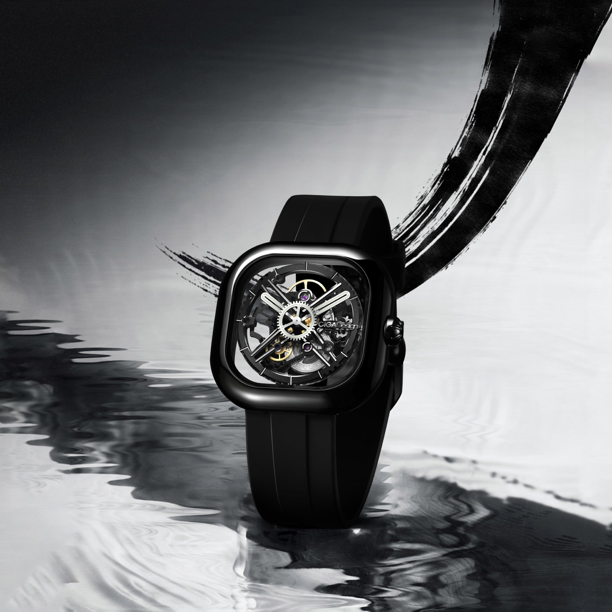
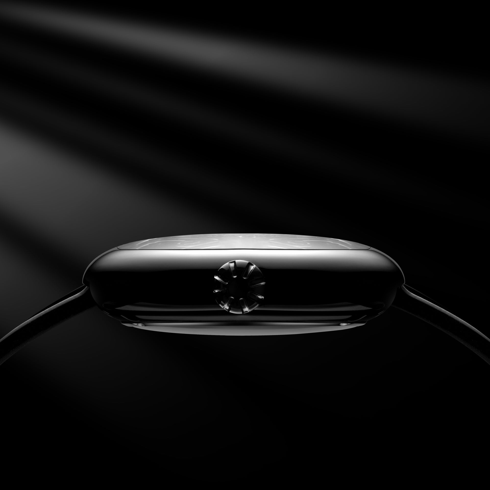
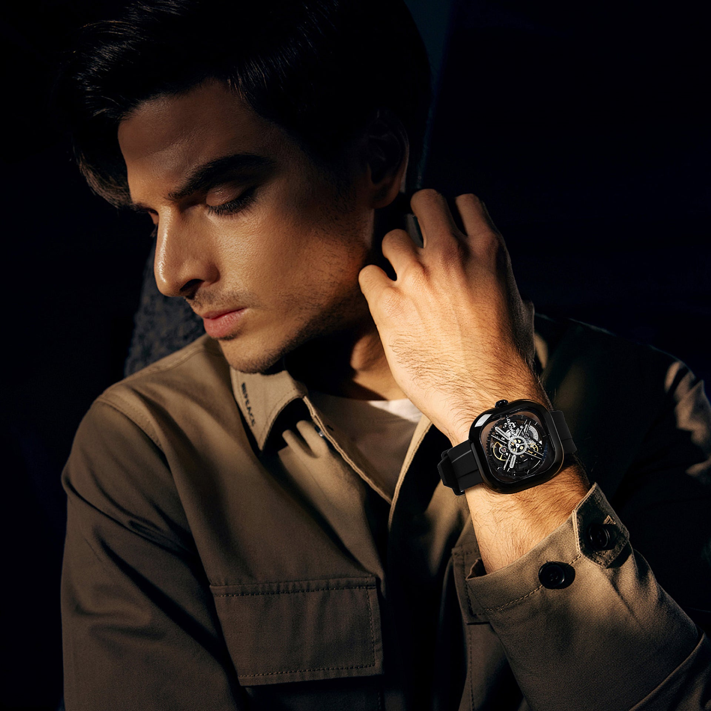
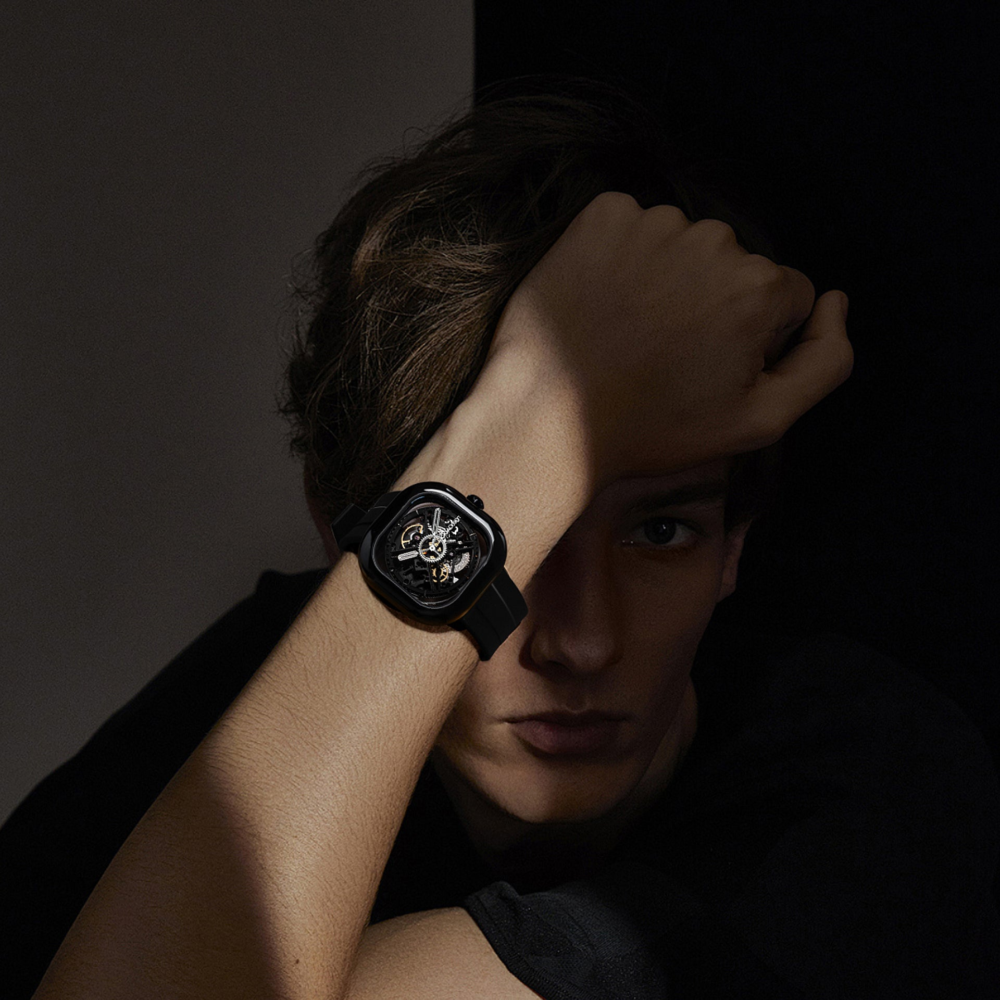
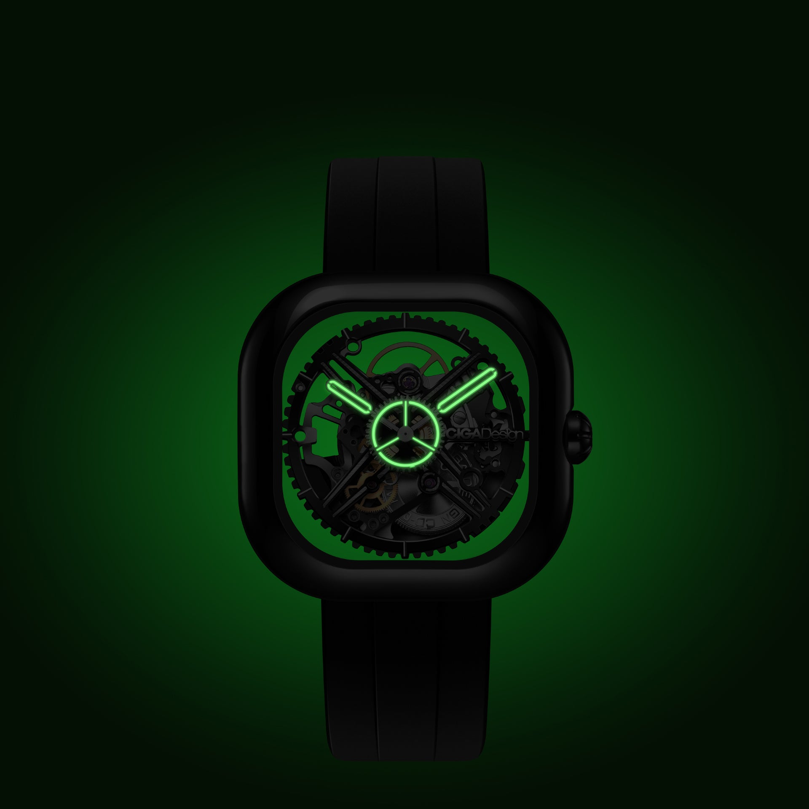
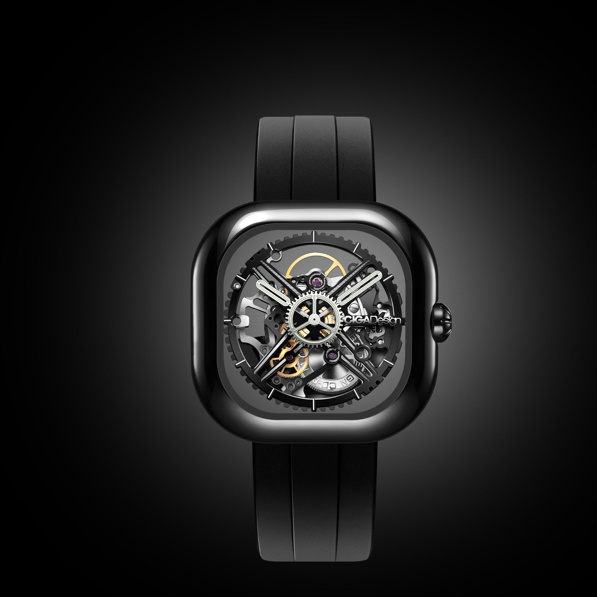

Nascido de uma tradição milenar, forjado pela tecnologia moderna. O Eastern Jade é a fusão entre a filosofia estética oriental do jade e a precisão mecânica contemporânea — uma peça onde cultura e engenharia se tornam inseparáveis.
Processo a 1800°C inspirado no jade imperial chinês
O Eastern Jade não é apenas um relógio — é uma declaração cultural. Cada milímetro da sua caixa carrega séculos de simbolismo e um processo de fabricação que exige domínio tecnológico absoluto.

Na cultura oriental, o jade não é apenas uma pedra — é símbolo de virtude, sabedoria e nobreza. O Eastern Jade traduz esse simbolismo em um processo cerâmico sofisticado: a caixa é produzida com cerâmica sinterizada a 1800°C, atingindo dureza, suavidade e tonalidade inspiradas no jade imperial chinês.
O resultado é uma caixa que não apenas referencia o jade visualmente, mas compartilha algumas de suas propriedades mais valorizadas: superfície de toque suave como seda, tonalidade verde profunda e consistente, e uma resistência que supera qualquer metal convencional em termos de dureza superficial.
A forma quadrada de 43×43mm remete à cosmologia chinesa — o quadrado representa a terra, o estável, o fundamento. Uma escolha de design que carrega significado além da estética.

O interior do Eastern Jade é animado pelo calibre in-house CD-02 — um movimento automático desenvolvido pela CIGA design que combina precisão mecânica com reserva de marcha generosa. Ter um calibre proprietário coloca o Eastern Jade em uma categoria técnica raramente alcançada por marcas independentes.
O mostrador do Eastern Jade é uma composição visual elaborada: índices integrados à estrutura, ponteiros com perfil slim e acabamento que complementa o verde profundo da caixa cerâmica. A leitura do tempo é clara, mas a contemplação do mostrador é o que realmente importa.
O caseback em vidro de safira revela o movimento automático CD-02 — um segundo ângulo de admiração que transforma a experiência de usar o relógio em algo verdadeiramente especial.
Processo de fabricação que reproduz a dureza, o toque e a tonalidade do jade imperial chinês — um material que nenhum metal pode imitar.
Movimento automático desenvolvido pela CIGA design — diferencial técnico exclusivo que eleva o Eastern Jade além de uma simples peça estética.
Safira sintética na frente e no caseback — proteção máxima e janela para o calibre CD-02 em ambos os lados da peça.
A forma quadrada simétrica referencia a cosmologia oriental — o quadrado como símbolo da terra e do fundamento na filosofia chinesa.
Cada especificação revela a complexidade do processo de fabricação e o nível de comprometimento técnico desta peça única.

| Tamanho da Caixa | 43mm × 43mm (quadrado) |
| Espessura da Caixa | 13,2mm |
| Material da Caixa | Cerâmica sinterizada a 1800°C (verde jade) |
| Tipo de Movimento | Automático in-house — calibre CD-02 |
| Frequência | 21,600 vph |
| Reserva de Marcha | Aproximadamente 42 horas |
| Indicadores | Horas e minutos |
| Precisão | -15 ~ +30 segundos/dia |
| Vidro | Safira sintética (frente e caseback) |
| Resistência à Água | 3 ATM (30 metros) |
| Largura da Pulseira | 22mm |
| Material da Pulseira | Couro genuíno premium / opção em cerâmica |
| Sistema de Pulseira | Quick-release (troca sem ferramentas) |
| Dureza da Cerâmica | ~9 HRC (dureza próxima ao corindo) |
A cerâmica do Eastern Jade passa por um processo de sinterização a 1800°C — temperatura que transforma o pó cerâmico em uma estrutura densa, homogênea e extraordinariamente dura. O resultado é um material com dureza próxima ao corindo (safira natural), resistência a arranhões muito superior ao aço inoxidável, toque suave ao contato com a pele e estabilidade de cor que não se altera com o tempo. Um processo que dura horas, para criar uma peça que dura décadas.
Informações essenciais para que sua apresentação do Eastern Jade seja precisa, autêntica e de alto impacto narrativo.
Como embaixador do Eastern Jade, você está apresentando uma peça que une dois mundos raramente combinados: filosofia estética oriental milenar e engenharia de materiais de alta tecnologia. Comunique essa fusão com respeito pela cultura e clareza sobre a tecnologia envolvida.
Cada ângulo narrativo abaixo foi construído para maximizar o impacto do seu conteúdo sobre o Eastern Jade.
| # | Direcionamento | Foco Narrativo | Base do Script (Exemplo) |
|---|---|---|---|
| 01 | 1800°C Como Argumento | O processo cerâmico como prova de rigor técnico. | "Esse relógio passa por um processo de sinterização a 1800°C — a mesma temperatura usada em componentes aeroespaciais. O resultado é uma cerâmica que nenhum metal pode imitar." |
| 02 | O Jade Imperial | A referência cultural de 5000 anos. | "O jade não é só uma pedra na cultura oriental — é símbolo de sabedoria, nobreza e virtude há mais de 5000 anos. O Eastern Jade traduz esse simbolismo em engenharia." |
| 03 | Calibre CD-02 In-House | O movimento proprietário como segundo diferencial. | "Por dentro, o Eastern Jade tem o calibre CD-02 — desenvolvido pela própria CIGA design. Cerâmica exclusiva por fora, engenharia proprietária por dentro." |
| 04 | O Toque da Cerâmica | A experiência sensorial única da superfície cerâmica. | "Tem uma coisa que você não consegue transmitir em foto: o toque da cerâmica. É mais suave que o metal, mais quente que o aço. A primeira vez que você coloca no pulso, entende." |
| 05 | Dureza Que Protege | A resistência a arranhões como benefício prático. | "Cerâmica sinterizada é mais dura que o aço inoxidável. O Eastern Jade não vai arranhar com o uso diário — a superfície mantém a aparência de novo por muito mais tempo." |
| 06 | A Caixa Quadrada | O simbolismo cultural da forma 43×43mm. | "O formato quadrado simétrico não é acidente — na filosofia oriental, o quadrado representa a terra, o fundamento, o equilíbrio. Cada detalhe do Eastern Jade tem intenção." |
| 07 | O Caseback em Safira | O CD-02 visível como segundo espetáculo. | "Vire o pulso e veja o calibre CD-02 funcionando através do caseback em safira. É cerâmica e jade por fora, mecânica exposta por dentro — dois mundos no mesmo relógio." |
| 08 | Para o Colecionador Sofisticado | Eastern Jade como peça única em qualquer coleção. | "Em qualquer coleção de relógios, o Eastern Jade vai ser a peça que as pessoas param para perguntar. É impossível ter outro igual — material, calibre e referência cultural únicos." |
| 09 | Presente de Alto Impacto | O Eastern Jade como presente memorável. | "Se você quer dar um presente que combina cultura, tecnologia e arte, o Eastern Jade não tem competição. A caixa formato livro em papel premium faz a entrega ser parte da experiência." |
| 10 | 17 Prêmios da Marca | O DNA premiado como contexto de autoridade. | "A CIGA design tem 17 prêmios internacionais de design. O Eastern Jade é mais um capítulo dessa história — uma marca que transforma referências culturais em objetos de precisão." |
Imagens oficiais do Eastern Jade disponíveis para uso em seu conteúdo.

